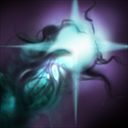
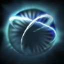
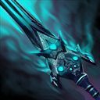
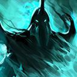
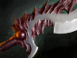
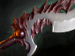

Dota 2 Builds
Abaddon
Род Аверно питает купель — разлом в земной тверди, который испускает загадочную энергию на протяжении поколений. Каждого новорожденного семьи окунают в этот темный туман, даруя тем самым связь с их землей и ее загадочной силой. Дети растут с непреклонной верой в защиту семейных ценностей и традиций земли, но на самом деле они охраняют саму купель, истинные намерения которой неизвестны. Когда новорожденный Abaddon проходил обряд крещения, что-то пошло не так. В глазах малыша сверкнула искра разума, испугавшая всех присутствовавших и заставившая жрецов шептаться. Его растили, дабы он пошел по пути всех отпрысков рода: война и защита родины во главе армии. Но сам Abaddon уделял этому не так много внимания. Пока другие тренировались в обращении с оружием, он медитировал у купели. Он глубоко вдыхал темный туман, учась быть единым с той силой, что протекала глубоко под землей его дома. В конечном счете он стал порождением черного тумана. Род Аверно неодобрительно отнесся к такому решению, обвиняя его в пренебрежении обязанностями. Но все эти обвинения прекратились, когда Abaddon вступил в свою первую битву и показал ту обретенную власть над жизнью и смертью, о которой другие члены рода не могли и мечтать.
Способности/Abulities
Mist Coil
 Ценой собственного здоровья выпускает смертельный туман, который наносит урон врагу или лечит союзника.

Способность: направленная на юнита
Действует на: союзников/врагов
Тип урона: магический/чистый/мгновенная атака (с Aghanim's Shard)
Дальность применения: 575
Урон по себе: 50%
Урон: 110/160/210/260 (Талант: 160/210/260/310)
Лечение: 110/160/210/260 (Талант: 160/210/260/310)
Радиус: 0 (Талант: 400)
Дыхание лорда Аверно преисполнено загадочными испарениями купели, подчиняющимися его воле.Aphotic Shield
 Окружает союзника щитом из тёмной энергии, который поглощает некоторое количество урона. Если щит пропадёт или его уничтожат, он взорвётся и нанесёт врагам вокруг урон, равный здоровью щита. Применение снимает с цели оглушение и большинство отрицательных эффектов.Способность: направленная на юнита
Действует на: союзников/врагов
Тип урона: магический
Дальность применения: 550
Радиус взрыва: 675
Поглощение урона: 110/140/170/200 (Талант: 210/240/270/300)
Урон по области: 110/140/170/200 (Талант: 210/240/270/300)
Длительность: 15
Сила черного тумана поглощает удары так же, как он сам поглощает дневной свет.Curse of Avernus
 Атаки героя замедляют передвижение жертвы. Если атаковать врага 4 раза, на него сработает замораживающее проклятие: оно накладывает безмолвие и замедление, а все атакующие этого врага существа получают дополнительную скорость атаки.Способность: Пассивная
Действует на: союзников/врагов
Ударов нужно: 4 (Талант: 3)
Базовое замедление скорости передвижения: 10%/15%/20%/25%
Замедление скорости передвижения: 15%/30%/45%/60% (Талант: 30%/45%/60%/75%)
Доп. скорость атаки: 40/60/80/100
Базовая длительность: 5
Длительность проклятья: 4,5
Длительность ускорения: 4
Крещёные в купели черпают из неё силы, но остальных дары Аверно смертельно изнуряют.Borrowed Time
 Обращает весь получаемый урон в лечение. Применение снимает большинство отрицательных эффектов. Если способность готова, то она сработает автоматически, как только здоровье владельца упадёт ниже 400.Способность: ненаправленная/аура (с Aghanim's Scepter)
Действует на: себя/союзников (с Aghanim's Scepter)
Порог здоровья: 400
Длительность: 4/5/6
Эта сила, самая противоестественная из всех даров купели Аверно, бросает вызов пониманию смертных. Что должно ранить — лечит, а что должно убить — дает свежие силы.
Сборка/Builds
Начальный закуп:


Основные предметы:


 



YOUTUBE:GREYSHARK

YOUTUBE:GREYSHARK
ИСПОЛЬЗОВАТЬ ЭТОТ ИМБА БИЛД